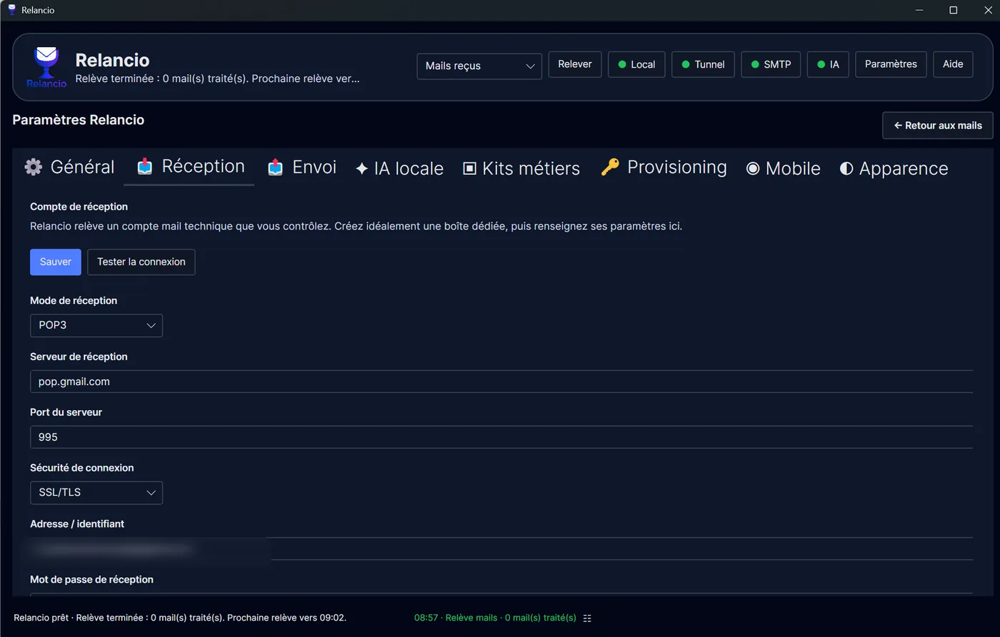
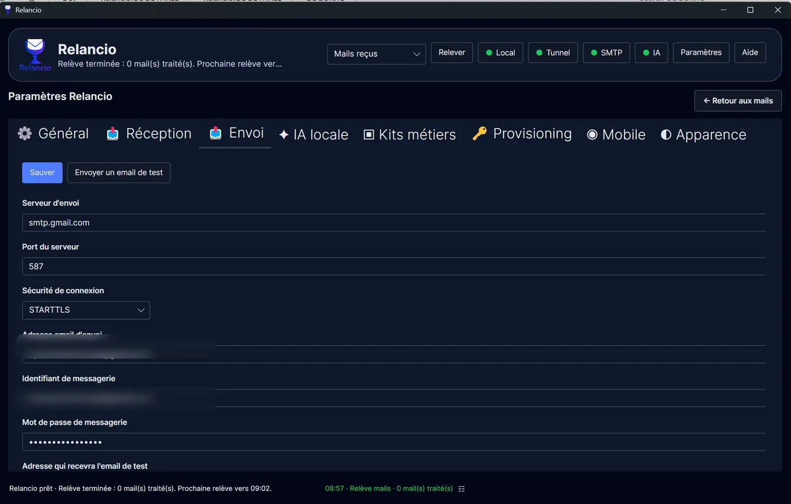

Relancio
Messagerie
Configurer la réception POP3/IMAP, l'envoi SMTP, Gmail et les pièces jointes.
Réception POP3 / IMAP
Relancio utilise un compte de réception que vous contrôlez. Vous choisissez le mode de réception, le serveur, le port, la sécurité, l’identifiant et le mot de passe.
- POP3 convient souvent à une relève simple.
- IMAP peut être préférable si le fournisseur ou votre usage repose sur une boîte synchronisée.
- Le bouton Tester la connexion permet de vérifier les paramètres avant usage.
- La relève peut être automatique ou manuelle avec le bouton Relever.
- La fréquence de relève automatique peut être paramétrée selon le rythme souhaité.

Envoi SMTP
L’envoi passe par le serveur SMTP configuré dans l’onglet Envoi. Relancio enverra les réponses depuis cette messagerie.
- Renseignez serveur, port, sécurité, adresse d’envoi, identifiant et mot de passe.
- Utilisez le bouton Envoyer un email de test pour vérifier la configuration avant usage réel.
- Les réponses ne partent qu'après action explicite sur Envoyer.

Gmail et fournisseurs mail
Gmail peut fonctionner en POP ou IMAP selon la configuration choisie. Les paramètres exacts dépendent du fournisseur. Dans de nombreux cas, Gmail exige un mot de passe d’application plutôt que le mot de passe habituel du compte, notamment lorsque la validation en deux étapes est activée.
pop.gmail.com, port 995, sécurité SSL/TLS, identifiant complet et mot de passe d’application.Pièces jointes
Les pièces jointes ajoutées à une réponse sont liées au brouillon sortant. En revanche, les pièces jointes entrantes ou transférées ne sont pas stockées durablement ni analysées par Relancio.